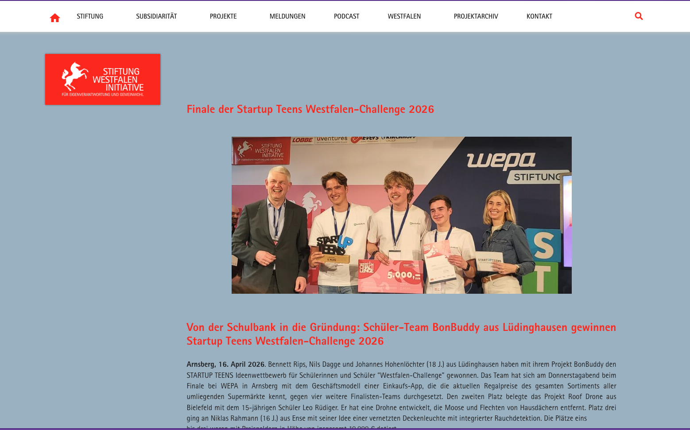
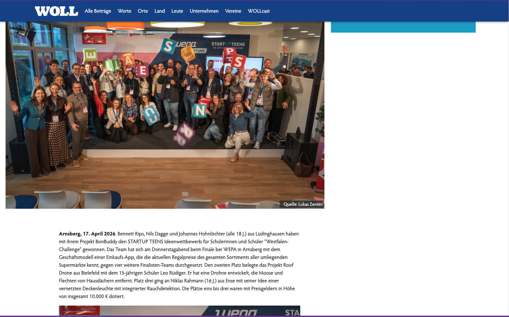
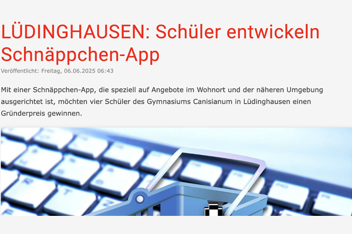
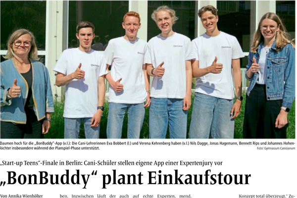
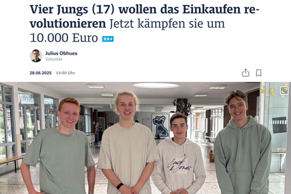
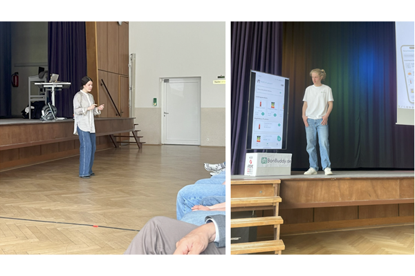

Finale der Startup Teens Westfalen-Challenge 2026
Von der Schulbank in die Gründung: Das Team BonBuddy gewinnt den renommierten Ideenwettbewerb gegen starke Konkurrenz in Arnsberg.
Vollständiger Artikel
Von der Schulbank in die Gründung
Mit 10.000 € Preisgeld im Gepäck revolutionieren Bennett, Nils und Johannes den Lebensmittelmarkt mit ihrer cleveren App.
Vollständiger Artikel
Schüler entwickeln Schnäppchen-App
Ein Portrait über die Anfänge von BonBuddy und wie die Idee im Klassenzimmer in Lüdinghausen entstand.
Beitrag lesen
"BonBuddy" plant Einkaufstour
Wie die App den lokalen Handel unterstützt und Kunden hilft, die beste Route durch die Stadt zu finden.
E-Paper öffnen
Vier Jungs wollen das Einkaufen revolutionieren
Ein tiefer Blick in den Algorithmus und die Vision hinter BonBuddy – direkt aus dem Herzen des Ruhrgebiets.
Artikel lesen
Gründergeist an der Schule
Unsere Schule berichtet über den Erfolg beim EF-Projekt und die Förderung junger Talente.
Zum SchulberichtSie möchten über uns berichten?
Gerne beantworten wir Ihre Fragen oder lassen Ihnen exklusives Bildmaterial zukommen.
Sie erreichen uns direkt unter:
presse@bonbuddy.de